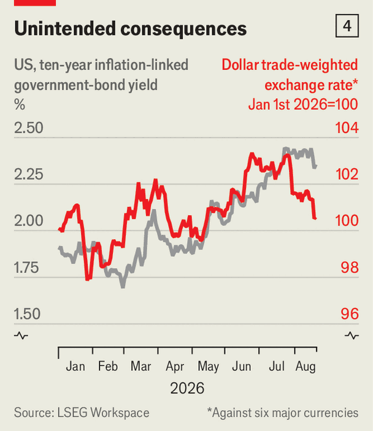

Scott Bessent takes on the bond market
And makes trouble for the Fed
Aug 27th 2026
Scott Bessent often says he wants to be America’s “top bond salesman”. An accountant might raise an eyebrow, though, on encountering a salesman who juiced his figures by purchasing his own wares. On August 19th Mr Bessent set out plans for the Treasury to buy back tens of billions of dollars’ worth of long-dated government debt.

His announcement has had only a limited effect. But it has sent an important signal to markets: that the Treasury is willing to fight to hold yields down, if they keep rising as they have in recent months. Yields fell at first, then edged back up and have since edged down again (see chart 1). The latest decline may reflect reports that Mr Bessent is considering further buy-backs and funding them from the Treasury General Account, in effect the government’s bank account at the Federal Reserve.
This year yields on government bonds around the world have climbed (ie, prices have fallen). High inflation had still not been entirely beaten back after the post-pandemic surge when America and Israel went to war with Iran in February, pushing up oil prices. Private borrowing to fund the vast build-out of artificial-intelligence data centres has also made capital costlier for everyone, including governments.

Most worrying, bond markets are beginning to reckon with the rich world’s debt binge. America’s budget deficit is 6% of GDP, the widest ever outside recession and wartime (see chart 2). Mr Bessent’s own target of reducing the deficit to 3% of GDP by 2028 looks fanciful. Other big economies, notably France and Japan, are also in poor fiscal shape. Worse, more than half of America’s deficit now consists of interest payments on past borrowing. There is a risk that a vicious circle takes hold: of rising yields, bigger deficits, still higher yields and so on.
That is not only a budgetary problem, but also a political one for the Trump administration. The midterm elections are less than ten weeks away and “affordability” is the word of the moment. Yet the two most salient costs for many voters—petrol prices and the 30-year mortgage rate—are both moving in the wrong direction.
With his buy-backs, Mr Bessent has tried to put his thumb on the scale. Usually, the Treasury sees its role as keeping the bond market orderly and liquid during crises, not jostling yields around in what should be quieter times. Mr Bessent, sounding rather like the hedge-fund trader he once was, has taken a different view. “We believe that the yields don’t reflect the underlying fundamentals,” he said in a television interview. That prompted a ferocious response from Stanley Druckenmiller, a celebrated macro investor and Mr Bessent’s former boss, who urged him to “let the bond market speak” in the Wall Street Journal. (Oddly, Mr Druckenmiller has admitted that his article was drafted by an AI chatbot.)
The Fed—the other centre of power in American macroeconomic policy—does sometimes try to move bond yields, through programmes such as quantitative easing (buying bonds by creating bank reserves) or “Operation Twist” in 2011 (selling short-term Treasuries and buying long-term ones, a central-banking mirror of Mr Bessent’s scheme). But its goal has always been a short-term economic one, such as fighting recession or inflation, not keeping the government’s finances afloat. Ironically, Kevin Warsh, the Fed’s new chair, who was picked in a process run by Mr Bessent, has disavowed quantitative easing and says policymakers should not leave a heavy footprint in markets.
Another irony is that Mr Bessent criticised his predecessor, Janet Yellen, for politicising the Treasury and interfering with the Fed’s work. Under Ms Yellen, the Treasury nudged up the share of government debt issued at shorter maturities. That, like Mr Bessent’s buy-backs, shifted borrowing from long- to short-term debt. Ms Yellen’s Treasury called it technocratic debt management; Mr Bessent echoed criticism of this as “activist Treasury issuance” to juice the economy before the 2024 election. After taking charge, Mr Bessent quietly maintained the same issuance pattern. Now, loudly, he has gone further.
The buy-backs are only the administration’s latest effort to resist rising bond yields. In July Mr Bessent structured his joint intervention with Japan to boost the yen to minimise its impact on Treasuries. Opening a dollar swap line with the United Arab Emirates, said to be under discussion, would ensure that the Emiratis’ sovereign-wealth fund would not need to sell its Treasuries in a crunch. In addition, over the past year Fannie Mae and Freddie Mac, the government-backed bodies that package up mortgages, have increased their purchases of mortgage-backed securities in an apparent effort to push down mortgage rates (see chart 3). (Support for Argentina’s peso during a tight election fight for Javier Milei, the country’s president, also illustrated Mr Bessent’s willingness to use American financial firepower for political purposes.)

Mr Bessent’s actions may not amount to much over the long term, but they may well squeeze yields down a little, at least until the midterms: a brazen politicisation of the Treasury market. Unfortunately for Mr Bessent, markets have other release valves. The dollar tumbled after his buy-back announcement (see chart 4), while gold surged: both signal investors’ increased scepticism about American assets.
Ultimately, lower yields plus a weaker dollar equals economic stimulus, akin to an interest-rate cut. That is not what America’s economy needs, whatever the politics. Markets think the Fed may, if anything, raise rates at its next meeting in September. Mr Warsh insists he “will not waver” in returning inflation to the Fed’s 2% target. He will have a chance to set out his own thinking more fully on August 28th at the Fed’s annual jamboree in Jackson Hole, Wyoming. Easing by the Treasury and tightening by the Fed could lead to a curious monetary-policy tug-of-war over the next few months. President Trump has long groaned about high interest rates. Mr Bessent may have calculated that trying to jawbone yields down could show the boss he is trying, even if markets rebuff his efforts. But the further he goes, the more pressure he piles on Mr Warsh.

Mr Bessent’s interventions may reflect his macro-trader past, Mr Trump’s quirky views on economics, and midterm politics. But they are more than mere Trumpian aberrations. Messing with markets becomes more tempting as countries’ debt situation worsens—just look at Japan’s constant meddling in the yen and in its own bond market. Governments, including America’s after the second world war, have often dealt with debt through financial repression: intervening to cap yields, stuffing bonds onto domestic savers and allowing inflation to eat away at their value.
Now investors are deciding if they still see the Treasury market as a stable place, free from political intervention and financial repression. Market moves caused by changes in fundamentals have a habit of overwhelming even the most determined governments. If he continues to fiddle, America’s top bond salesman may find his wares ever harder to hawk. ■